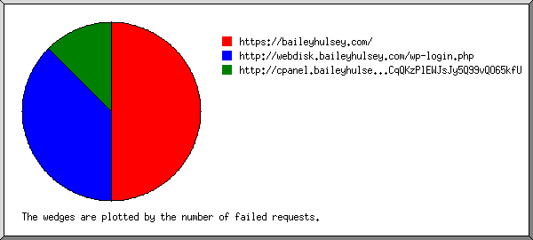
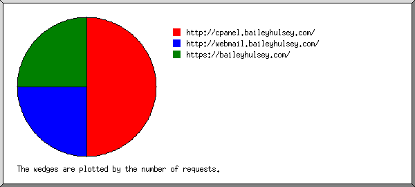
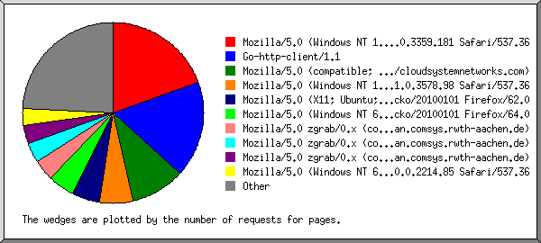
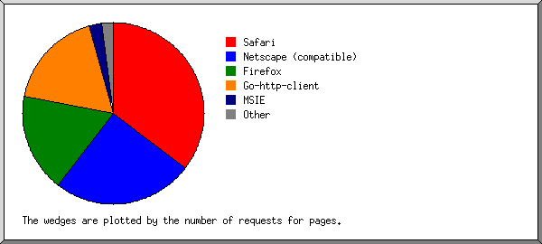
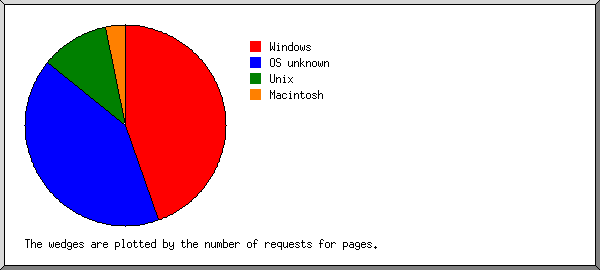
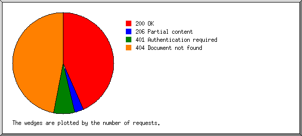
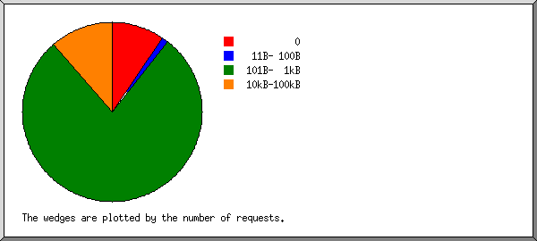
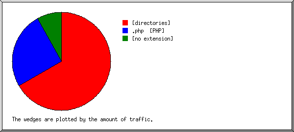
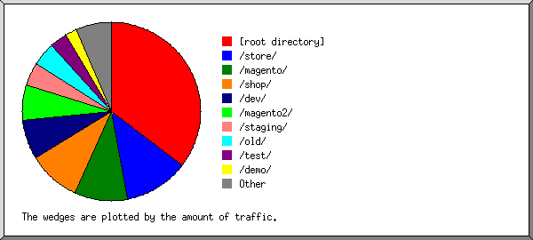
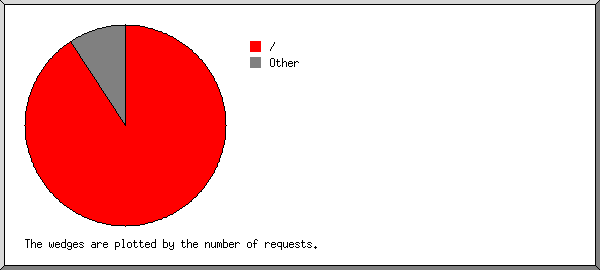

Web Server Statistics for baileyhulsey.com
Web Server Statistics for baileyhulsey.com
Program started on Fri, Jan 31 2020 at 6:11 AM.
Analyzed requests from Thu, May 23 2019 at 5:55 PM to Fri, Jan 31 2020 at 1:32 AM (252.32 days).
Web Server Statistics for baileyhulsey.comProgram started on Fri, Jan 31 2020 at 6:11 AM.
Analyzed requests from Thu, May 23 2019 at 5:55 PM to Fri, Jan 31 2020 at 1:32 AM (252.32 days).
(Go To: Top | General Summary | Monthly Report | Daily Summary | Hourly Summary | Domain Report | Organization Report | Failed Referrer Report | Referring Site Report | Browser Report | Browser Summary | Operating System Report | Status Code Report | File Size Report | File Type Report | Directory Report | Request Report)
Figures in parentheses refer to the 7-day period ending Jan 31 2020 at 6:11 AM.
Successful requests: 846 (15)
Average successful requests per day: 3 (2)
Successful requests for pages: 805 (15)
Average successful requests for pages per day: 3 (2)
Failed requests: 977 (2)
Distinct files requested: 51 (2)
Distinct hosts served: 419 (3)
Data transferred: 3.70 megabytes (125.14 kilobytes)
Average data transferred per day: 15.01 kilobytes (17.88 kilobytes)
(Go To: Top | General Summary | Monthly Report | Daily Summary | Hourly Summary | Domain Report | Organization Report | Failed Referrer Report | Referring Site Report | Browser Report | Browser Summary | Operating System Report | Status Code Report | File Size Report | File Type Report | Directory Report | Request Report)
Each unit ( ) represents 5 requests for pages or part thereof.
) represents 5 requests for pages or part thereof.
| month | #reqs | #pages | |
|---|---|---|---|
| May 2019 | 23 | 14 |  |
| Jun 2019 | 64 | 64 |   |
| Jul 2019 | 94 | 94 |  |
| Aug 2019 | 110 | 109 | |
| Sep 2019 | 71 | 71 | |
| Oct 2019 | 130 | 130 | |
| Nov 2019 | 94 | 93 | |
| Dec 2019 | 201 | 173 |  |
| Jan 2020 | 59 | 57 | |
Busiest month: Dec 2019 (173 requests for pages).
(Go To: Top | General Summary | Monthly Report | Daily Summary | Hourly Summary | Domain Report | Organization Report | Failed Referrer Report | Referring Site Report | Browser Report | Browser Summary | Operating System Report | Status Code Report | File Size Report | File Type Report | Directory Report | Request Report)
Each unit () represents 5 requests for pages or part thereof.
| day | #reqs | #pages | |
|---|---|---|---|
| Sun | 62 | 61 | |
| Mon | 100 | 92 | |
| Tue | 134 | 116 | |
| Wed | 69 | 66 | |
| Thu | 131 | 124 | |
| Fri | 190 | 187 | |
| Sat | 160 | 159 | |
(Go To: Top | General Summary | Monthly Report | Daily Summary | Hourly Summary | Domain Report | Organization Report | Failed Referrer Report | Referring Site Report | Browser Report | Browser Summary | Operating System Report | Status Code Report | File Size Report | File Type Report | Directory Report | Request Report)
Each unit () represents 3 requests for pages or part thereof.
| hour | #reqs | #pages | |
|---|---|---|---|
| 0 | 19 | 18 | |
| 1 | 25 | 25 | |
| 2 | 45 | 45 | |
| 3 | 32 | 32 | |
| 4 | 125 | 120 | |
| 5 | 40 | 40 | |
| 6 | 29 | 28 | |
| 7 | 24 | 24 | |
| 8 | 44 | 42 | |
| 9 | 50 | 49 | |
| 10 | 50 | 50 | |
| 11 | 54 | 52 | |
| 12 | 42 | 42 | |
| 13 | 40 | 40 | |
| 14 | 38 | 36 | |
| 15 | 27 | 27 | |
| 16 | 32 | 27 | |
| 17 | 19 | 18 | |
| 18 | 14 | 13 | |
| 19 | 49 | 33 | |
| 20 | 15 | 12 | |
| 21 | 10 | 9 | |
| 22 | 14 | 14 | |
| 23 | 9 | 9 | |
(Go To: Top | General Summary | Monthly Report | Daily Summary | Hourly Summary | Domain Report | Organization Report | Failed Referrer Report | Referring Site Report | Browser Report | Browser Summary | Operating System Report | Status Code Report | File Size Report | File Type Report | Directory Report | Request Report)
Listing domains, sorted by the amount of traffic.
| #reqs | %bytes | domain |
|---|---|---|
| 846 | 100% | [unresolved numerical addresses] |
(Go To: Top | General Summary | Monthly Report | Daily Summary | Hourly Summary | Domain Report | Organization Report | Failed Referrer Report | Referring Site Report | Browser Report | Browser Summary | Operating System Report | Status Code Report | File Size Report | File Type Report | Directory Report | Request Report)

Listing the top 20 organizations by the number of requests, sorted by the number of requests.
| #reqs | %bytes | organization |
|---|---|---|
| 88 | 1.10% | 34 |
| 83 | 1.01% | 137.226 |
| 82 | 3.20% | 209.17 |
| 74 | 0.87% | 54 |
| 68 | 0.37% | 52 |
| 66 | 0.88% | 213.159 |
| 40 | 0.28% | 35 |
| 36 | 0.46% | 77 |
| 24 | 24.72% | 196.52 |
| 22 | 0.25% | 18 |
| 21 | 138.246 | |
| 19 | 0.24% | 60 |
| 15 | 15.45% | 137.59 |
| 15 | 1.78% | 46 |
| 11 | 2.45% | 51 |
| 11 | 0.14% | 192.95 |
| 9 | 9.27% | 185.128 |
| 9 | 0.12% | 87 |
| 8 | 0.11% | 93 |
| 8 | 1.13% | 167.71 |
| 137 | 36.17% | [not listed: 68 organizations] |
(Go To: Top | General Summary | Monthly Report | Daily Summary | Hourly Summary | Domain Report | Organization Report | Failed Referrer Report | Referring Site Report | Browser Report | Browser Summary | Operating System Report | Status Code Report | File Size Report | File Type Report | Directory Report | Request Report)

Listing referring URLs, sorted by the number of failed requests.
| #reqs | URL |
|---|---|
| 4 | https://baileyhulsey.com/ |
| 3 | http://webdisk.baileyhulsey.com/wp-login.php |
| 1 | http://cpanel.baileyhulsey.com/.well-known/acme-challenge/ihfM1Sx74My9HO70iFCqQKzPlEWJsJy5Q99vQO65kfU |
(Go To: Top | General Summary | Monthly Report | Daily Summary | Hourly Summary | Domain Report | Organization Report | Failed Referrer Report | Referring Site Report | Browser Report | Browser Summary | Operating System Report | Status Code Report | File Size Report | File Type Report | Directory Report | Request Report)

Listing referring sites, sorted by the number of requests.
| #reqs | site |
|---|---|
| 4 | http://cpanel.baileyhulsey.com/ |
| 2 | http://webmail.baileyhulsey.com/ |
| 2 | https://baileyhulsey.com/ |
(Go To: Top | General Summary | Monthly Report | Daily Summary | Hourly Summary | Domain Report | Organization Report | Failed Referrer Report | Referring Site Report | Browser Report | Browser Summary | Operating System Report | Status Code Report | File Size Report | File Type Report | Directory Report | Request Report)

Listing the top 40 browsers by the number of requests for pages, sorted by the number of requests for pages.
| #reqs | #pages | browser |
|---|---|---|
| 153 | 153 | Mozilla/5.0 (Windows NT 10.0; Win64; x64)AppleWebKit/537.36 (KHTML, like Gecko) Chrome/66.0.3359.181 Safari/537.36 |
| 138 | 138 | Go-http-client/1.1 |
| 82 | 82 | Mozilla/5.0 (compatible; Nimbostratus-Bot/v1.3.2; http://cloudsystemnetworks.com) |
| 46 | 46 | Mozilla/5.0 (Windows NT 10.0; Win64; x64) AppleWebKit/537.36 (KHTML, like Gecko) Chrome/71.0.3578.98 Safari/537.36 |
| 70 | 39 | Mozilla/5.0 (X11; Ubuntu; Linux x86_64; rv:62.0) Gecko/20100101 Firefox/62.0 |
| 38 | 38 | Mozilla/5.0 (Windows NT 6.1; Win64; x64; rv:64.0) Gecko/20100101 Firefox/64.0 |
| 29 | 29 | Mozilla/5.0 zgrab/0.x (compatible; Researchscan/t12sns; +http://researchscan.comsys.rwth-aachen.de) |
| 28 | 28 | Mozilla/5.0 zgrab/0.x (compatible; Researchscan/t12ca; +http://researchscan.comsys.rwth-aachen.de) |
| 26 | 26 | Mozilla/5.0 zgrab/0.x (compatible; Researchscan/t13rl; +http://researchscan.comsys.rwth-aachen.de) |
| 25 | 25 | Mozilla/5.0 (compatible; NetcraftSurveyAgent/1.0; +info@netcraft.com) |
| 24 | 24 | Mozilla/5.0 (Windows NT 6.1; Win64; x64) AppleWebKit/537.36 (KHTML, like Gecko) Chrome/40.0.2214.85 Safari/537.36 |
| 19 | 19 | Mozilla/5.0 (Macintosh; Intel Mac OS X 10.11; rv:47.0) Gecko/20100101 Firefox/47.0 |
| 18 | 18 | Mozilla/5.0 (Windows NT 6.1; WOW64) AppleWebKit/537.36 (KHTML, like Gecko) Chrome/36.0.1985.143 Safari/537.36 |
| 17 | 17 | Mozilla/5.0 (X11; Ubuntu; Linux x86_64; rv:58.0) Gecko/20100101 Firefox/58.0 |
| 7 | 7 | Mozilla/5.0 (X11; CrOS x86_64 8172.45.0) AppleWebKit/537.36 (KHTML, like Gecko) Chrome/51.0.2704.64 Safari/537.36 |
| 6 | 6 | Mozilla/4.0 (compatible; MSIE 6.0; Windows NT 5.0; .NET CLR 1.0.3705) |
| 6 | 6 | Mozilla/5.0 (Windows NT 6.1; rv:5.0) Gecko/20100101 Firefox/5.02 |
| 6 | 6 | Mozilla/4.0 (compatible; MSIE 6.0; MSIE 5.5; Windows NT 5.0) Opera 7.02 Bork-edition [en] |
| 5 | 5 | Mozilla/5.0 (X11; Linux x86_64) AppleWebKit/537.36 (KHTML, like Gecko) Chrome/78.0.3904.108 Safari/537.36 |
| 5 | 5 | Mozilla/5.0 (X11; U; Linux x86_64; de; rv:1.9.2.8) Gecko/20100723 Ubuntu/10.04 (lucid) Firefox/3.6.8 |
| 5 | 5 | python-requests/2.21.0 |
| 5 | 5 | Mozilla/5.0 (Windows NT 6.0) AppleWebKit/535.1 (KHTML, like Gecko) Chrome/13.0.782.112 Safari/535.1 |
| 4 | 4 | Mozilla/5.0 (Windows NT 10.0; Win64; x64) AppleWebKit/537.36 (KHTML, like Gecko) Chrome/42.0.2311.135 Safari/537.36 Edge/12.246 |
| 4 | 4 | Mozilla/5.0 (Macintosh; Intel Mac OS X 10_11_2) AppleWebKit/601.3.9 (KHTML, like Gecko) Version/9.0.2 Safari/601.3.9 |
| 4 | 4 | Mozilla/5.0 (X11; Linux x86_64) AppleWebKit/537.36 (KHTML, like Gecko) Chrome/58.0.3029.110 Safari/537.36 |
| 4 | 4 | Mozilla/5.0 (Windows NT 5.1; rv:13.0) Gecko/20100101 Firefox/13.0.1 |
| 4 | 4 | Mozilla/4.0 (compatible; MSIE 7.0; Windows NT 5.1; SV1; .NET CLR 2.0.50727) |
| 3 | 3 | Mozilla/5.0 (Macintosh; Intel Mac OS X 10.11; rv:52.0) Gecko/20100101 Firefox/52.0 |
| 3 | 3 | Mozilla/5.0 (compatible; MSIE 9.0; Windows NT 6.1; WOW64; Trident/5.0) |
| 3 | 3 | Mozilla/4.0 (compatible; MSIE 6.0; Windows NT 5.1; FSL 7.0.7.01001) |
| 3 | 3 | Mozilla/4.0 (compatible; MSIE 7.0; Windows NT 5.1; Trident/4.0; .NET CLR 2.0.50727; .NET CLR 3.0.4506.2152; .NET CLR 3.5.30729) |
| 3 | 3 | Mozilla/5.0 (X11; Ubuntu; Linux x86_64; rv:15.0) Gecko/20100101 Firefox/15.0.1 |
| 3 | 3 | Mozilla/5.0 (Windows NT 10.0; Win64; x64) AppleWebKit/537.36 (KHTML, like Gecko) Chrome/71.0.3578.98 Safari/537.36 3021 |
| 2 | 2 | Mozilla/5.0 (Windows NT 6.1; WOW64) AppleWebKit/537.36 (KHTML, like Gecko) Chrome/34.0.1847.131 Safari/537.36 |
| 2 | 2 | Mozilla/5.0 (Windows NT 6.1; WOW64; rv:12.0) Gecko/20100101 Firefox/12.0 |
| 2 | 2 | Mozilla/5.0 (Windows NT 10.0; Win64; x64) AppleWebKit/537.36 (KHTML, like Gecko) Chrome/69.0.3497.100 Safari/537.36 |
| 2 | 2 | Mozilla/5.0 (X11; Linux x86_64) AppleWebKit/537.36 (KHTML, like Gecko) Chrome/75.0.3770.142 Safari/537.36 |
| 2 | 2 | Mozilla/5.0 (X11; Linux x86_64) AppleWebKit/537.36 (KHTML, like Gecko) Chrome/76.0.3809.100 Safari/537.36 |
| 2 | 2 | Mozilla/5.0 (Windows NT 6.1; WOW64) AppleWebKit/537.36 (KHTML, like Gecko) Chrome/47.0.2526.111 Safari/537.36 |
| 1 | 1 | Mozilla/5.0 (Windows NT 6.1; WOW64) AppleWebKit/537.36 (KHTML, like Gecko) Chrome/27.0.1453.93 Safari/537.36 |
| 31 | 21 | [not listed: 24 browsers] |
(Go To: Top | General Summary | Monthly Report | Daily Summary | Hourly Summary | Domain Report | Organization Report | Failed Referrer Report | Referring Site Report | Browser Report | Browser Summary | Operating System Report | Status Code Report | File Size Report | File Type Report | Directory Report | Request Report)

Listing browsers with at least 1 request for a page, sorted by the number of requests for pages.
| # | #reqs | #pages | browser |
|---|---|---|---|
| 1 | 305 | 295 | Safari |
| 294 | 284 | Safari/537 | |
| 5 | 5 | Safari/535 | |
| 4 | 4 | Safari/601 | |
| 1 | 1 | Safari/602 | |
| 1 | 1 | Safari/525 | |
| 2 | 190 | 190 | Netscape (compatible) |
| 3 | 172 | 141 | Firefox |
| 71 | 40 | Firefox/62 | |
| 39 | 39 | Firefox/64 | |
| 19 | 19 | Firefox/47 | |
| 17 | 17 | Firefox/58 | |
| 6 | 6 | Firefox/5 | |
| 5 | 5 | Firefox/3 | |
| 4 | 4 | Firefox/13 | |
| 3 | 3 | Firefox/15 | |
| 3 | 3 | Firefox/52 | |
| 2 | 2 | Firefox/12 | |
| 4 | 138 | 138 | Go-http-client |
| 138 | 138 | Go-http-client/1 | |
| 5 | 20 | 20 | MSIE |
| 10 | 10 | MSIE/6 | |
| 7 | 7 | MSIE/7 | |
| 3 | 3 | MSIE/9 | |
| 6 | 7 | 7 | Opera |
| 6 | 6 | Opera/7 | |
| 1 | 1 | Opera/9 | |
| 7 | 5 | 5 | python-requests |
| 5 | 5 | python-requests/2 | |
| 8 | 1 | 1 | Python |
| 1 | 1 | Python/3 | |
| 9 | 1 | 1 | Mozilla |
| 10 | 1 | 1 | okhttp |
| 1 | 1 | okhttp/4 |
(Go To: Top | General Summary | Monthly Report | Daily Summary | Hourly Summary | Domain Report | Organization Report | Failed Referrer Report | Referring Site Report | Browser Report | Browser Summary | Operating System Report | Status Code Report | File Size Report | File Type Report | Directory Report | Request Report)

Listing operating systems, sorted by the number of requests for pages.
| # | #reqs | #pages | OS |
|---|---|---|---|
| 1 | 357 | 350 | Windows |
| 222 | 215 | Windows NT | |
| 107 | 107 | Unknown Windows | |
| 15 | 15 | Windows XP | |
| 12 | 12 | Windows 2000 | |
| 1 | 1 | Windows Server 2003 | |
| 2 | 335 | 335 | OS unknown |
| 3 | 117 | 86 | Unix |
| 110 | 79 | Linux | |
| 7 | 7 | Other Unix | |
| 4 | 31 | 28 | Macintosh |
(Go To: Top | General Summary | Monthly Report | Daily Summary | Hourly Summary | Domain Report | Organization Report | Failed Referrer Report | Referring Site Report | Browser Report | Browser Summary | Operating System Report | Status Code Report | File Size Report | File Type Report | Directory Report | Request Report)

Listing status codes, sorted numerically.
| #reqs | status code |
|---|---|
| 792 | 200 OK |
| 54 | 206 Partial content |
| 122 | 401 Authentication required |
| 855 | 404 Document not found |
(Go To: Top | General Summary | Monthly Report | Daily Summary | Hourly Summary | Domain Report | Organization Report | Failed Referrer Report | Referring Site Report | Browser Report | Browser Summary | Operating System Report | Status Code Report | File Size Report | File Type Report | Directory Report | Request Report)

| size | #reqs | %bytes |
|---|---|---|
| 0 | 82 | |
| 1B- 10B | 0 | |
| 11B- 100B | 10 | 0.03% |
| 101B- 1kB | 657 | 8.32% |
| 1kB- 10kB | 0 | |
| 10kB-100kB | 97 | 91.66% |
(Go To: Top | General Summary | Monthly Report | Daily Summary | Hourly Summary | Domain Report | Organization Report | Failed Referrer Report | Referring Site Report | Browser Report | Browser Summary | Operating System Report | Status Code Report | File Size Report | File Type Report | Directory Report | Request Report)

Listing extensions with at least 0.1% of the traffic, sorted by the amount of traffic.
| #reqs | %bytes | extension |
|---|---|---|
| 805 | 63.85% | [directories] |
| 31 | 27.40% | .php [PHP] |
| 10 | 8.75% | [no extension] |
(Go To: Top | General Summary | Monthly Report | Daily Summary | Hourly Summary | Domain Report | Organization Report | Failed Referrer Report | Referring Site Report | Browser Report | Browser Summary | Operating System Report | Status Code Report | File Size Report | File Type Report | Directory Report | Request Report)

Listing directories with at least 0.01% of the traffic, sorted by the amount of traffic.
| #reqs | %bytes | directory |
|---|---|---|
| 785 | 37.39% | [root directory] |
| 11 | 11.33% | /store/ |
| 9 | 9.27% | /magento/ |
| 9 | 9.27% | /shop/ |
| 7 | 6.98% | /dev/ |
| 6 | 6.18% | /magento2/ |
| 4 | 4.12% | /staging/ |
| 4 | 4.12% | /old/ |
| 3 | 3.09% | /test/ |
| 2 | 2.06% | /demo/ |
| 2 | 2.06% | /pub/ |
| 2 | 2.06% | /index.php/ |
| 2 | 2.06% | /admin/ |
(Go To: Top | General Summary | Monthly Report | Daily Summary | Hourly Summary | Domain Report | Organization Report | Failed Referrer Report | Referring Site Report | Browser Report | Browser Summary | Operating System Report | Status Code Report | File Size Report | File Type Report | Directory Report | Request Report)

Listing files with at least 20 requests, sorted by the number of requests.
| #reqs | %bytes | last time | file |
|---|---|---|---|
| 769 | 26.77% | Jan/31/20 1:32 AM | / |
| 136 | 4.67% | Jan/30/20 10:55 AM | /?38.145.113.85 |
| 23 | 0.20% | Jul/21/19 8:31 AM | /?34.208.155.83 |
| 18 | 0.17% | Jul/22/19 9:22 AM | /?199.229.249.169 |
| 12 | 0.12% | Aug/ 7/19 4:50 PM | /?66.249.75.3 |
| 77 | 73.23% | Jan/17/20 6:34 PM | [not listed: 36 files] |